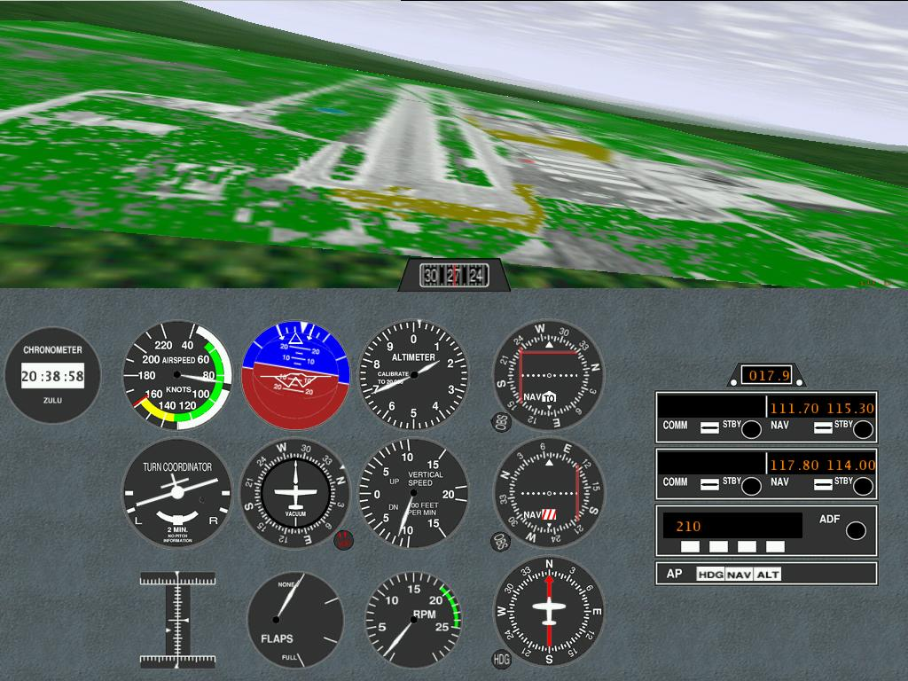
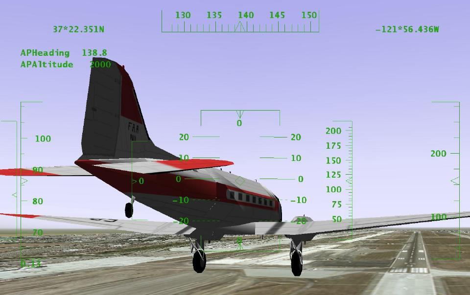
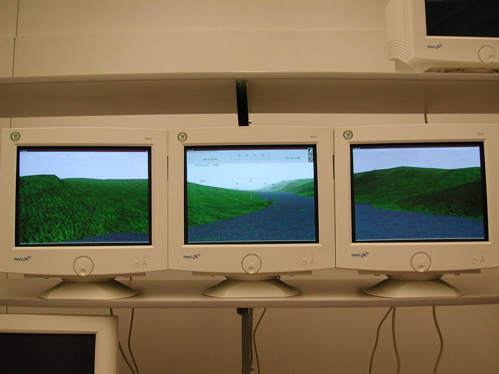
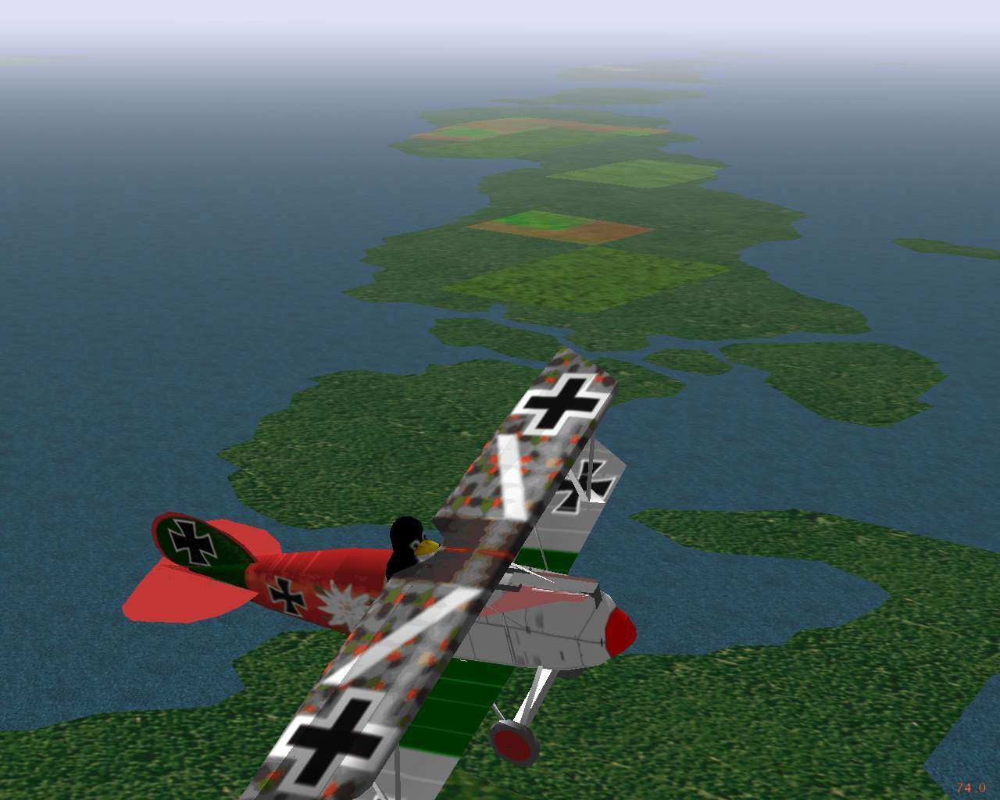
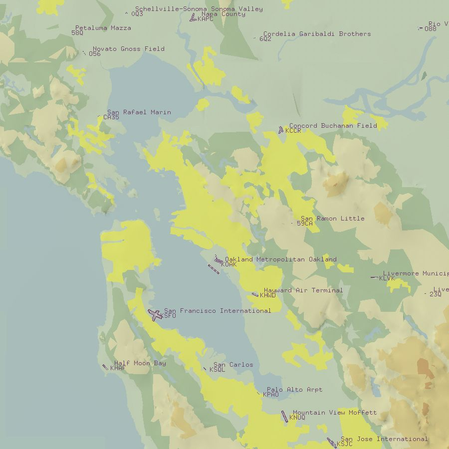
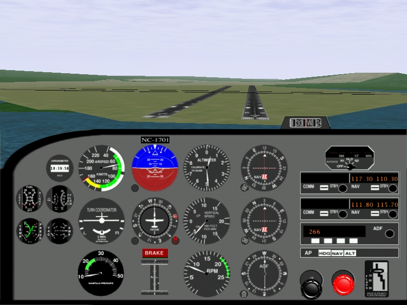
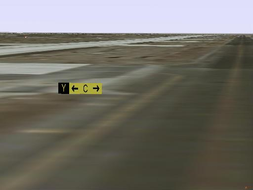

Presenter and Developer
a FORUM presentation
for LinuxTag 2001
on Saturday at 13:00
- C. Olson

- Project Leader
GPL Open Source licensed
Linux, Win32, Mac, Irix platforms
(page 1)
Project focus
- To create high quality simulation that
- minimises short cuts and runs on ordinary computers
- extensible and encourages local modifications
- Started April 1996 by David Murr
- Open source (GPL) - No commercial backing as yet
- Curt Olson made a multiplatform release in July 1997
- Since then, it expanded beyond flight aerodynamics
- improving graphics, clouds and fog,
- a shaded sky with sun, moon and stars correctly drawn,
- automated worldwide scenery, network play,
- electronic navigation systems, airports and runways,
- head up display and instrument panel and much more ...
- Scales up from commodity computers
- For commercial and research applications
- Fairly easy using Linux on various targets
(page 2)
Custom airport 2000

(page 3)
Custom airport 2001

(page 4)
Portability between Operating Systems
- Portable across operating systems (Mac, IRIX, etc)
- For sound, 3D graphics, menus, joystick and keyboard
- Implementation may be equivalent, yet very different
- The PLIB project offers a simple API
- http://plib.sourceforge.net
- Generally, the Windows binaries are portable
- This is critical for most Win32 users
- Few of them have developer tools installed
- Linux-based operating systems are very similar
- Compared to Windows, MacOS and Irix, etc
- Most problems affect PLIB first
- When PLIB runs, FlightGear is generally ok
- With joysticks, for example:
- Two ioctl()s, /dev/js0 or /dev/input/js0
- Devices detected early and not consistently numbered
(page 5)
Simulator Execution
- FlightGear can be running in less than an hour ...
- 1. Install Linux normally
- Ensure zlib and its headers are present
- 2. Install and test 3D support
- On video card, maximum of 25% of memory for 2D display
- Then enable hardware accel (may need XFree86 3 and Utah)
- Verify at least 100fps using gears (or play glTron)
- 3. Install PLIB 1.2 or later with headers
- Already packaged in many distributions
- Test with the supplied examples to ensure working
- 4. Install SimGear and FlightGear
- Prepackaged in SuSE, Mandrake and Debian unstable
- Or download SimGear, FlightGear source and base
- Compile and install SimGear, then FlightGear, then
- Finish installing the base and added scenery
- 5. Type "runfgfs" and enjoy
(page 6)
Features beyond minimal install
- It's lonely being alone in the sky
- Network play support is built-in
- Each aircraft has to be reported to all others
- Considerable network load, can degrade performance
- The FlightGear Daemon is a standalone program
- Runs on separate computer to do coordination
- View is more like passenger portholes on airlines
- Not the wraparound windows of general aviation aircraft
- Especially when the simulated aircraft has an open cockpit
- Use multiple displays, as shown on next slide
- Base package only has a small area
- San Francisco and adjacent Bay area, California
- New pilots soon want to go somewhere else
- The scenery server has the whole world, see later
(page 7)
Multiple displays for the pilot

(page 8)
Multiple displays implementation
- Multiple cards in one computer is slow
- They compete for the limited bus bandwidth
- Use network socket communications
- One machine runs FDM, and exports FDM data
- Others use dummy FDM and import that data
- No intrinsic limit to number of displays
- runfgfs --fov=45.0 --view-offset=0
- --native=socket,out,60,s1,5500,udp
- --native=socket,out,60,s2,5500,udp
- runfgfs --fov=45.0 --view-offset=-50
- --native=socket,in,60,,5500,udp --fdm=external
- runfgfs --fov=45.0 --view-offset=50
- --native=socket,in,60,,5500,udp --fdm=external
(page 9)
Simulating the Aircraft
- The aerodynamic simulation is only one part
- Of the whole environment being simulated
- Its performance is critical to the user's experience
- Errors in Flight Dynamics Model (FDM) are distracting
- Other simulator components such as the autopilot
- Are designed to expect a realistic aircraft
- May respond incorrectly as a result of FDM errors
- Provide additional pilot distractions
- Can ruin the user's immersive experience
- The FDM is created as an object abstraction
- Allows multiple FDMs to be installed
- Permits R&D use and future expansion
(page 10)
Simulating - Flight Dynamics Model
- LaRCsim, models a Cessna 172 or Navion
- Dedicated C source with coefficients hard coded
- Supports all normal flight maneuvers
- University of Illinois, parametric derivative
- Simplified the models for cruise flight regimes
- A configuration file is loaded at simulation start
- Supports many different light aircraft choices
- JSBSim, completely parametric FDM
- All the information is retrieved from XML format files
- Can run independently of a full environmental sim
- As of this year, supports the Cessna 172 fairly well and
- The X-15 (a hypersonic rocket propelled research vehicle)
(page 11)
XML appearing everywhere ?
- This year, most configuration files are XML
- The engine models,
- The instrument panel layouts, instrument designs,
- The head up display layout,
- The user preferences and the saved state
- The real benefit of using XML here ?
- For people with no software development background
- Pilots, instructors, maintenance techs, researchers
- They can easily and effectively contribute
- All have in-depth technical knowledge of value
- How an aircraft and hence the simulator should behave
- Previously, Windows binary users were excluded
- Much system configuration was done at compile-time
- Everyone must have direct access to the internals
(page 12)
Simulating Instruments and Radios
- All real-life instruments have errors
- As well as subtle failures to catch inattentive pilots
- We calculate the physics and determine the error
- Without this, the simulator is much too easy
- Note that the HUD is computer generated
- The computer can do the physics modelling too
- Real-life HUDs generally don't have these errors
- Navigation radios have been implemented this year
- Errors are not (they make real-life use challenging)
- Communication radios are not implemented
- Pilots cannot use their microphone inputs to interact
- Radio usage is a large part of aviation complexity
- Another source of challenging distractions
(page 13)
Simulator Structure - Properties
- Core is directly interacting objects
- High level state is also generalized out of them
- Property database is new this year
- Relates a hierarchical name: /position/latitude
- To an object with getter and setter methods
- Ideal for user interface needs and saved state
- Used for parametric graphics elements, configuration files
- Properties are network accessible
- runfgfs --props=socket,bi,20,,5555,tcp
- telnet localhost 5555
- Especially useful for Flight Instructor activities
- Independent programs can interact with the simulation
(page 14)
Simulating the World - TerraGear
- Open-source tools and rendering libraries
- Collect free data for building 3D representations
- The whole earth usable in real time rendering
- Much freely available GIS data on the internet
- Core data for FlightGear has to be unrestricted
- So many sources of raw data cannot be incorporated
- Three categories of data are in use
- Digital Elevation Model (DEM), 1 km grid worldwide
- Polygon outlines for lakes, islands, towns
- New this year, we also use vegetation and land usage
- Landmarks such as lighthouses, radio and water towers
- Individual users and groups can rebuild
- Generate larger, slower files for faster computers
- Use locally available, restricted, data sources
- Optimize scenery quality for specific application
(page 15)
TerraGear - Screen dump

(page 16)
TerraGear - Storage size
- Clearly a synthetic image, but sufficient
- Navigate by pilotage - comparing view to a chart
- Compact, about one kilobyte per square kilometer
- Necessary, since about 10000 sq km may be in view
- Stored in a 4 level hierarchy, each 10-100 smaller
- One planet, currently only the Earth
- 10 deg x 10 deg rectangle
- 1 deg x 1 deg, approx 100 km x 60 km
- A rectangular tile of 100 km^2 approximately
- Tiles are demand loaded and unloaded
- Runs slower when the visibility is better
- Needs more memory to store tiles too
(page 17)
National data limitations
- Poor worldwide data already being used
- Good data is often country specific
- Need special code to read and process file format
- A lot of effort to do this for every country
- Rapidly reaches the point of diminishing returns
- Many organizations collect/transform the data
- Creates a standardized format, for these applications
- There is a huge amount of effort involved
- So their prices are extremely high to fund it
- They cannot give the data away for us to use
- Maybe those organization will sell us scenery
- Run their data through TerraGear and burn some CDs
- You can expect a high price tag for such reliable data
(page 18)
Mismatched Charts - Atlas
- Public domain data is generally of reduced quality
- or out of date, or selective, or local coverage, etc
- The scenery generated from that data is actually wrong
- Compared to the real world out there
- Synthetic charts - Atlas project
- Automatic translation of TerraGear files
- Generates usable aviation style charts
- Inaccurate compared to the real world
- Therefore useless for flight in an aircraft
- The Atlas application is for browsing
- This year, it connects directly to FlightGear
- Display aircraft current location on moving map
- Most small aircraft do not have moving map GPS
- Invaluable to the flight instructor
(page 19)
Synthetic chart - example

(page 20)
Worldwide detail within airports
- This year, added support for various databases
- These list worldwide airport details
- And their runway positions, lengths, etc
- With hints on surface type and markings
- This is sufficient to generate all runways
- What about the rest of the airport
- Taxiways and ramp areas available in CVS version
- Courtesy of Robin Peel's taxiway database
- Control tower, hangars, terminals and similar
- Not available, users can add them manually using PPE
- Surface navigation signs and markings
- No general support available, a lot of work with PPE
- Clearly, realism is poor below stalling speed
- No central government control of those areas
- Thus, no convenient data archive we can use
(page 21)
Standard landing screenshot 2001

(page 22)
Example of future support for signs

(page 23)
Simulator Applications
- A wide range of people interested
- Building a realistic home simulator out old airplane parts
- Simply having a viable alternative to commercial sims
- A platform for icing research at Smart Icing Systems Project
- Control algorithms for an autonomous aerial vehicle
- Retrofit some older sim hardware with FGFS based software
- Renew an old Agwagon single seat, single engine simulator
- Image generator for eval of ski-jump launch
- and arrested recovery from an aircraft carrier
- Scenery and out-the-window view for the Genesis 3000 sim
- Airport familiarization to avoid runway incursions
(page 24)
Shrinkwrap sale
- Reselling open source software ?
- It has not been a good revenue source for other companies
- Partly because of the rapid version changes
- And because of the low cost of bandwidth for the consumer
- Yet, several organizations are considering it
- Can FlightGear be a viable profit center?
- It is being repackaged by many distributions
- To ensure a painless installation for the community
- There appears to be little benefit in making a product here
- Closed source flight sim games are available at under $20
- Separate the database of visual scenery
- Everything else user needs is only few megabytes
- Which easily fits into a corner of a scenery CD
- Will readily be downloaded when new versions available
(page 25)
Shrinkwrap sale - Scenery
- The scenery needs lots of space
- About a gigabyte for each continent currently
- Is unlikely to get any smaller in future
- This still represents a significant download
- The scenery is relatively stable over time
- Old versions are usually useful with newer binary software
- Upgrades only add detail to an existing and viable database
- There is clearly a retail opportunity
- Probably a DVD or a dozen CDs of the world
- Trivial marginal cost of adding a few dozen binaries
- for popular distros and driver combinations
- Thus, this retail package is likely to be fully functional
(page 26)
Streaming scenery - concept
- Consider general aviation aircraft
- Cruise usually below 200 knots, often only 120 knots
- Flight visibility is (in real life) usually below 20 miles
- For lower altitudes used by non-turbocharged piston engines
- Maximum of 8000 square miles per hour
- Even when flying in a straight line (worst case)
- This is new terrain that will come into view
- Currently, database uses 1 MB/ 600 sq miles
- Streaming rate 12 megabytes/hour will be sufficient
- That will fit through a normal 56K modem link
- An airliner at cruising altitude needs all your DSL
- Bandwidth is often much lower
- Because some scenery may already be downloaded
- Will be zero in your favorite flight areas
- Then there is no need to be on-line while flying
(page 27)
Streaming scenery - implementation
- No change to FlightGear source is needed
- The latitude and longitude of the aircraft are exported
- Scenery is stored in convenient 100 sqkm pieces
- An independent program can make directed requests
- For example, by spawning "wget" calls
- Still any need for retail scenery packages ?
- Multiply this bandwidth by worldwide community
- That is a sizeable traffic impact on the servers
- Latency is critical; we must keep ahead of the pilot
- Is the total still low enough to be supported for goodwill ?
- Will free servers transition to monthly access fees ?
- Would they then start delivering proprietary content ?
- Who knows ... until we try it
(page 28)
Flight Training
- Could also be helpful when learning to fly
- Flight training is carefully regulated by government
- To ensure that aircraft generally stay in the sky
- Until their pilot intends for them to come down safely
- There are real concerns, before authorities can approve a system
- What does the U.S. government want ?
- Any pilot can sit down and immediately use it
- It isn't dangerously different or deceptively easy
- The instructor can specify the flight environment
- Flight Gear Avation Training Device
- http://fgatd.sourceforge.net
- Goal is to implement requirements to achieve approval
- Most of the work is documentation and testing
- Actual simulation is a minor part of the whole
- Finding sources of suitable controls is a challenge
(page 29)
Flight training - OverRegulated ?
- The FAA is responding to human nature
- That doesn't go away just because it's inconvenient
- The things learnt first
- Leave an almost unshakeable impression
- At times of severe stress, will over-rule later training
- Any false impressions are learned by a beginning student
- Tend to remain hidden until a potentially lethal situation
- At that time the pilot may react wrongly
- An excessively optimistic opinion
- Of piloting skills will result if simulator is easy
- Or if it does not exhibit common instrument flaws
- A pilot will willingly fly into dangerous situations
- that are beyond their skill proficiency and be at risk
- Only a trained instructor can judge
- Whether the learning experience is beneficial
- The documentation materials are essential to that
(page 30)
What's in the future?
- FDMs are not (yet) accurate enough
- Only suitable for conservative flights
- Don't reflect the challenges of acrobatic maneuvering
- Higher performance human input devices
- Beyond the 8-bit joystick resolution limit
- Rugged and rigid, like real aircraft controls
- New consumer technologies for immersion
- Surround projectors, head mounted displays
- Directional sound and cockpit motion effects
- Users will fly safe, forgetting they're not in danger
- Recent radar and visual satellite surveys
- Enough detail to be used as photorealistic scenery
- First, we must manipulate terabytes in real time
- Data volume is about a million times larger than now
(page 31)
Conclusions
- FlightGear is a simple Open Source project
- Builds on many existing projects
- In the community tradition
- Due to the subject it addresses
- It has many issues and concerns
- Are raised that rarely inconvenience other projects
- These elements are providing the exciting challenges
- And variety of associated activities
- Enjoyed by the developers
- Thank you for your interest.
www.flightgear.org
(page 32)